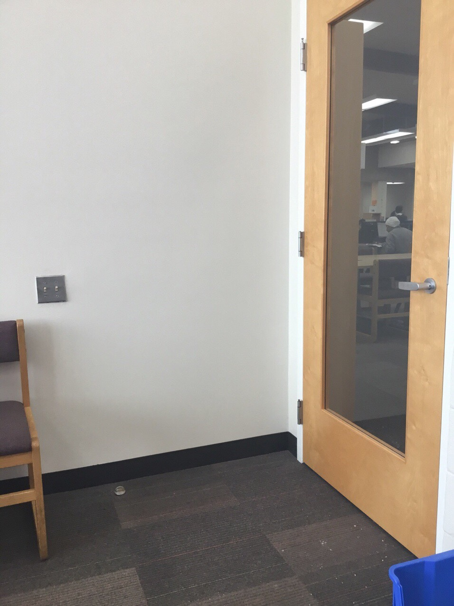
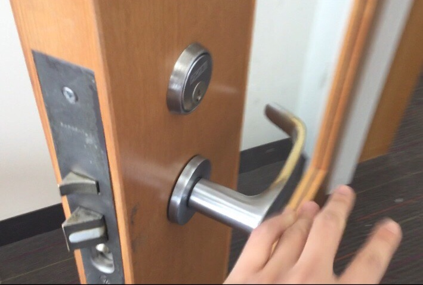

'
'
'
This is the door to the library's quiet room. Its primary purpose is to provide an entryway into the room while insulating noise from the rest of the library, giving people a place to work, study, and read -- a space for concentration to flow, away from the voices (oftentimes of crying children) that brew outside.
Properties:
The glass center is a major design strength, allowing people to check seat availability from outside without disturbing the deep concentration of those within.
The door is great at noise insulation, but for a quiet room, the act of shutting the door is awfully loud. The frequency of people entering and leaving creates enough noise to disturb those inside.
There are four main ways people interact with the doorknob:
(1) Loud, Minimal Thought, Closed
Shutting the door normally
creates a lot of sound.
(2) Quiet, More Thought, Closed
Shutting the door slowly and
deliberately minimizes sound, but it creates
a friction point for the door-shutter.
(3) Medium, Minimal Thought, Open
Some just leave the door open, especially
when they plan to exit the room soon.
Noise from outside leaks in.
(4) Quiet, More Thought, Open
Here the door-shutter leaves the
door resting on its latch, minimizing
sound, but creating a friction point in
their experience.
1:31 PM -- Person A
Profile: Middle-aged man, in winter clothes and backpack, exiting room
Door state (before): Not completely shut, resting on latch (option 4)
Interaction: Opened the door by pulling the handle, then closed the door slowly behind him, resting the door on the latch (option 4).
1:33 PM -- Person B
Profile: Middle-aged woman, a librarian, entering the room to reshelve magazines.
Door state (before): Not completely shut, resting on latch (option 4)
Interaction: Moved the lever handle down to enter the room (creating noise), then left the door slightly ajar (similar to option 4). Exited the room at 1:35 PM, closing the door behind her slowly and completely (option 2).
1:40 PM -- Person C
Profile: Small, elderly woman, entering the room to browse magazines
Door state (before): Shut completely.
Interaction: Pulled the lever handle towards her to enter the room, I made eye-contact with her and smiled, she closed the door very slowly and completely, with extreme caution and care (option 2). Exited the room at 1:43, once again very careful to shut the door slowly and completely (option 2).
1:50 PM -- Person D
Profile: Me, young woman, exiting the room to get scratch paper.
Door state (before): Shut completely.
Interaction: Moved the lever handle down to exit the room, left the door slightly open (similar to option 4) because I knew I would enter again soon. When I returned, the door was closed, so I moved the lever handle down, pushed the door, and after entering, closed the door completely, but slowly (option 2).
There was nothing explicitly written (post-it notes, signs, etc), but some users left the door resting on its latch (option 4 above), which led subsequent users to follow this precedent (e.g. Person A).
' '
For comparison, I tested the library's bathroom door, which is significantly quieter for two reasons: (1) There is no latch, and (2) there is a closer arm (example pictured above) installed at the top of the door, which slows down the speed at which the door closes.
The door to the quiet room would benefit from removing latches and replacing the current lock with a dead lock, which stays within the door when unlocked. The closer arm could reduce a little noise as well, but the cost is much higher.
Next time I'd like to take better photographs, taking note of details like the lock, the closing arm, etc, focusing in on them with straight-on camera shots.